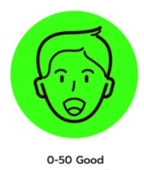
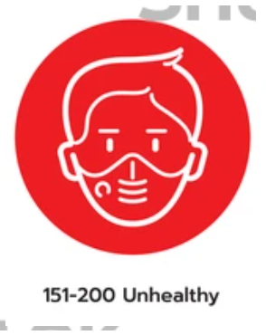

2. 具有氣喘的人可能需要增加使用吸入劑的頻率。
2. 具有氣喘的人可能需要增加使用吸入劑的頻率。
2. 具有氣喘的人可能需要增加使用吸入劑的頻率。
| AQI | 0-50 | 51-100 | 101-150 | 151-200 | 201-300 |
| 對健康的影響 | 良好 | 普通 | 對敏感族群不良 | 對所有族群不良 | 非常不良 |
| 代表顏色 |  | |
|
 | |
| 一般民眾活動建議 | 正常戶外活動 | 正常戶外活動，空氣品質普通；但對非常少數之極敏感族群產生輕微影響。 | 空氣汙染物可能會對敏感族群的健康造成影響，但是對一般大眾的影響不明顯。 | 任何人如果有不適，如眼睛痛咳嗽或喉嚨痛等，應該考慮減少戶外活動。 | 任何人如果有不適，如眼睛痛咳嗽或喉嚨痛等，應減少體力消耗，特別是戶外活動。 |
| 敏感性族群活動建議 | 正常戶外活動 | 極特殊敏感族群建議注意，可能產生的咳嗽或呼吸急促症狀，但仍然可正常戶外活動。 | 1. 有心臟、呼吸道及心血管疾病患者、孩童及老年人，建議減少體力消耗活動及戶外活動，必要外出應配戴口罩。 2. 具有氣喘的人可能需要增加使用吸入劑的頻率。 |
1. 有心臟、呼吸道及心血管疾病患者、孩童及老年人， 建議留在室內並減少體力消耗活動，必要外出應配戴口罩。 2. 具有氣喘的人可能需要增加使用吸入劑的頻率。 |
1. 有心臟、呼吸道及心血管疾病患者、孩童及老年人，應留在室內並減少體力消耗活動，必要外出應配戴口罩。 2. 具有氣喘的人可能需要增加使用吸入劑的頻率。 |